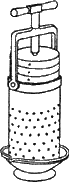
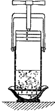

Самогон, водка и настойки. Сбор винограда.

Изготовление виноградного вина начинается со сбора винограда. Виноград собирают в тот момент, когда он достигает полной зрелости. Именно в зрелых плодах образуется наибольшее количество сахара. Виноград, который используется для получения хороших белых вин, желательно как можно дольше оставлять на кусте и постоянно следить за тем, чтобы он не испортился. Виноделы иногда оставляют грозди на лозе до тех пор, пока ягоды не начнут гнить. Как они утверждают, гниение, вызванное особым грибком, нисколько не ухудшает вкус будущего вина, а наоборот, позволяет напитку приобрести отличные качества и аромат. Однако держать на плетях виноград можно только в теплую и сырую погоду.
Если же осень выдалась достаточно дождливой, виноград может покрыться нежелательной серой гнилью, которая в дальнейшем способна уничтожить весь урожай.
Виноград не рекомендуется убирать после дождя или ранним утром, когда ягоды покрыты обильной росой. Тогда сусло будет разжиженным, а вино – сравнительно слабым и низким по качеству.
Сусло из ягод, собранных в сухую и солнечную погоду, – хорошего качества. Процесс брожения в такой смеси проходит легко и соответствует требованиям.
Холодный сок бродит медленно, а вино, полученное из него, впоследствии подвергается все новым брожениям. Из кисти желательно сразу удалять гнилые и начинающие гнить ягоды. После сбора виноград сразу сортируют, а затем подвергают дальнейшей обработке.
Прессование
После того как урожай винограда собран и отсортирован, приступают к изготовлению мезги.
Мезга представляет собой смесь кожицы, сока и зерен. Этот процесс можно назвать дроблением, или прессованием.
Виноград можно дробить босыми ногами, поместив его в определенную емкость. При этом должны быть раздавлены все ягоды.
Ягоды измельчают также механическим путем, применяя, например, пресс. Его нетрудно сделать в домашних условиях, и он очень удобен в использовании (рис. 7).
Прессование проводится в несколько этапов. Вытекающий из фракций сок имеет различный химический состав.
Вначале без нажима вытекает так называемый сок-самотек. Он часто намного мутнее и грязнее, нежели тот, что получается прессованием.
В процессе прессования из виноградной массы извлекается часть сока. Этот сок будет относительно мало загрязненным. Мезгу прессуют в этапа необходимо проводить рыхление выжимок. Прессование выполняется таким образом, чтобы не отжимать сок из кожицы и гребней. Тем более нежелательно дробить виноградные косточки. От этого резко ухудшится вкус вина. Поэтому по возможности следует применять слабое давление. Отжим проводят с перерывами, чтобы жидкость стекала из-под пресса, при этом следует избегать резкого давления.


Рис. 7. Ручной пресс для выжимания сока
Сок, полученный на последнем этапе прессования, как правило, содержит намного меньше сахара, кислот, в отличие от ранее полученного. Но именно в этом соке содержится большое количество минеральных и дубильных веществ.